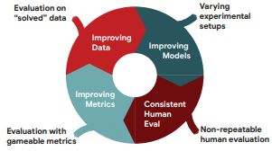

|
Research
My main goal as a Natural Language Processing (NLP) researcher is to increase the representation of low resource languages, especially African languages in an NLP community. My previous works range from the creation and curation of new datasets, machine translation, text classification, text summarization, sentiment analysis, named-entity recognition, and common sense reasoning.
|
|

|
The GEM Benchmark: Natural Language Generation, its Evaluation and Metrics
Sebastian Gehrmann,
Tosin Adewumi,
et al. including
Rubungo Andre Niyongabo
In the Proceedings of the 1st Workshop on Natural Language Generation, Evaluation, and Metrics (GEM 2021), pages 96–120
Paper
/
Website
/
Team
GEM is a benchmark environment for Natural Language Generation with a focus on its Evaluation, both through human annotations and automated Metrics. It aims to measure NLG progress across many NLG tasks across languages, audit data and models and present results via data cards and model robustness reports, and develop standards for evaluation of generated text using both automated and human metrics.
|
|
{kind=link}